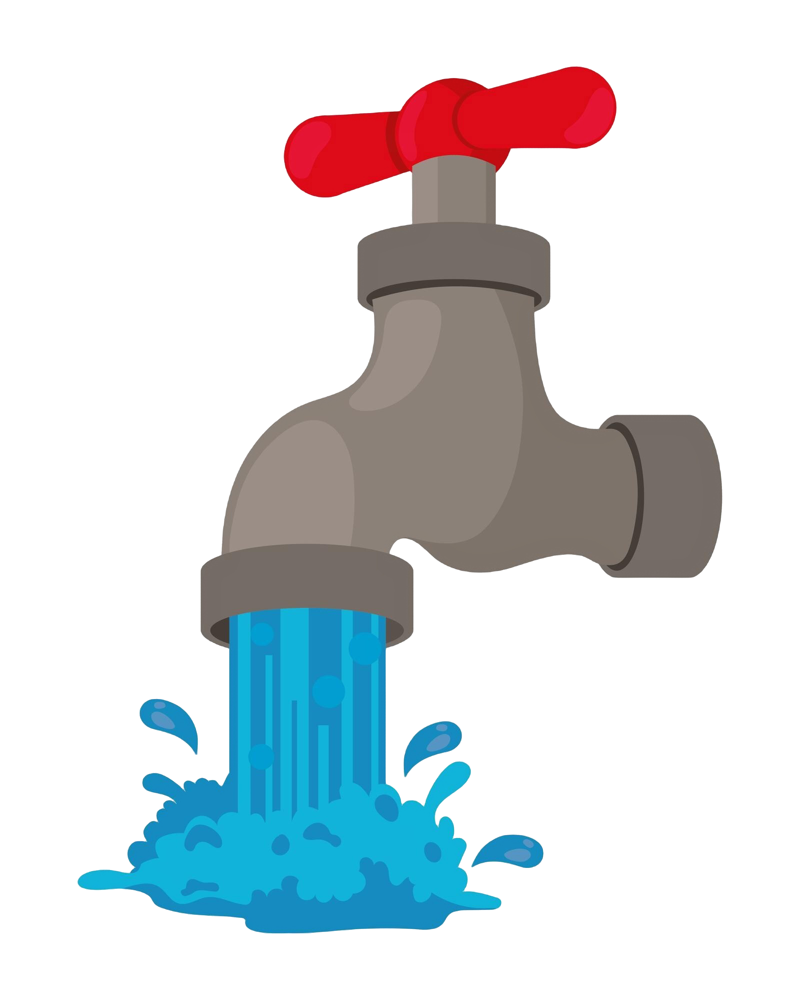
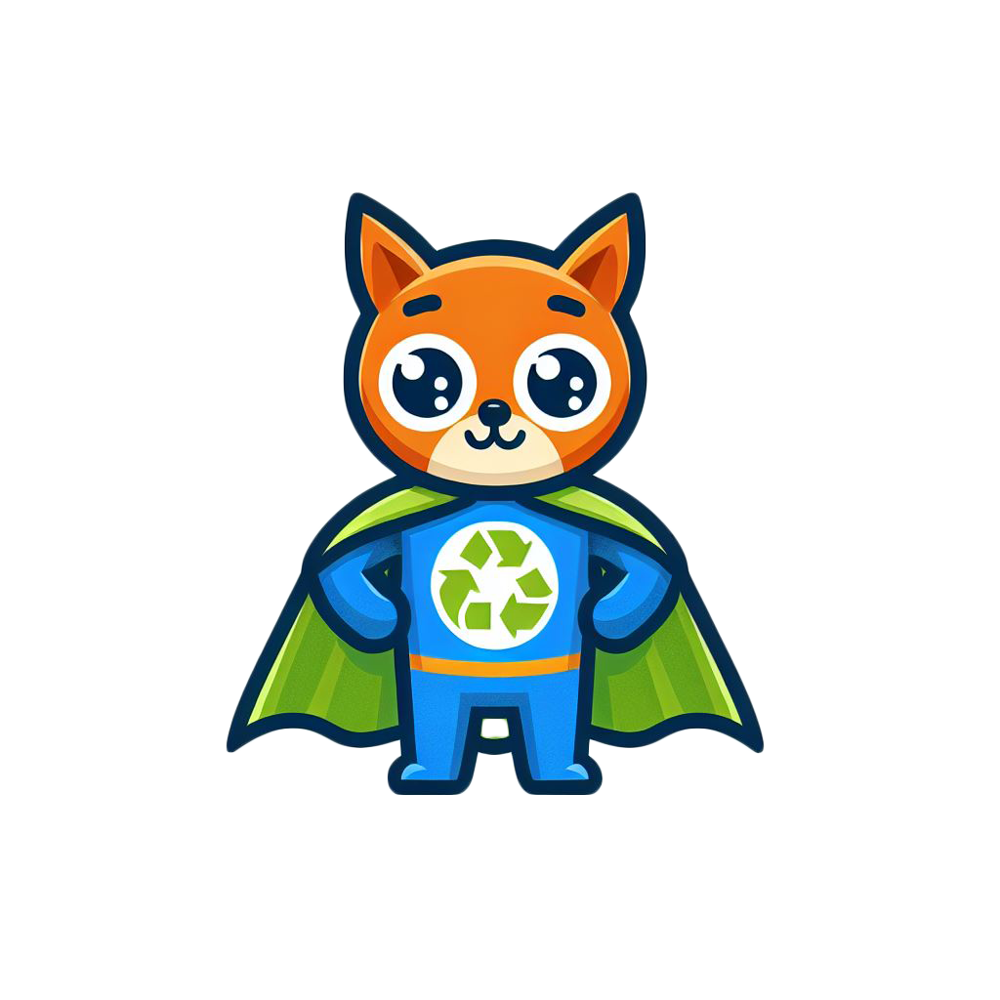

🚰 Fecha as torneiras abertas quando a água começar a correr!


Bem-vindo à casa de banho! Alguém deixou as torneiras a pingar e a correr água sem necessidade.
A água potável é um dos recursos mais preciosos da Terra. O teu objetivo é clicar ou tocar nas torneiras que começarem a pingar para as fechar imediatamente. Fecha 10 torneiras antes que o tempo esgote!
